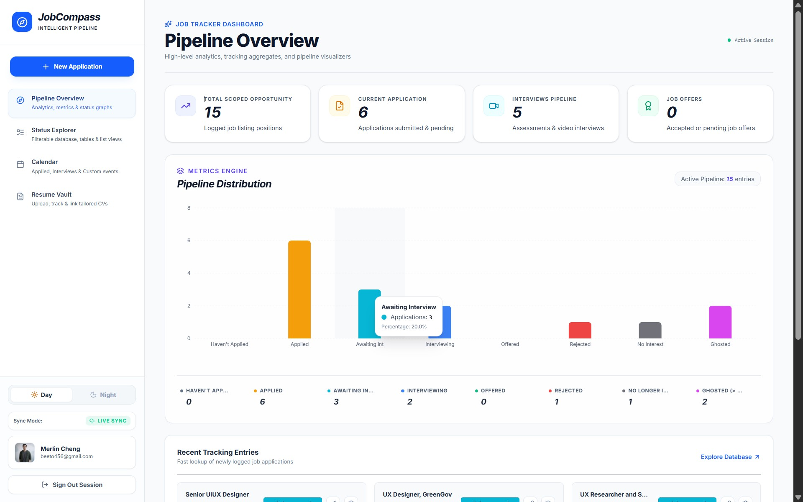
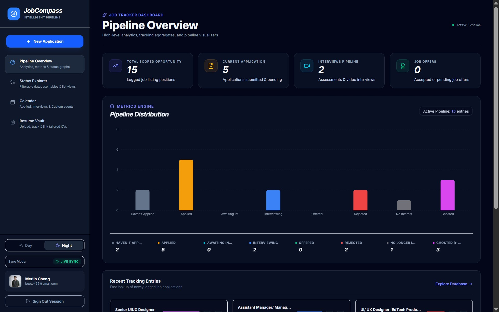
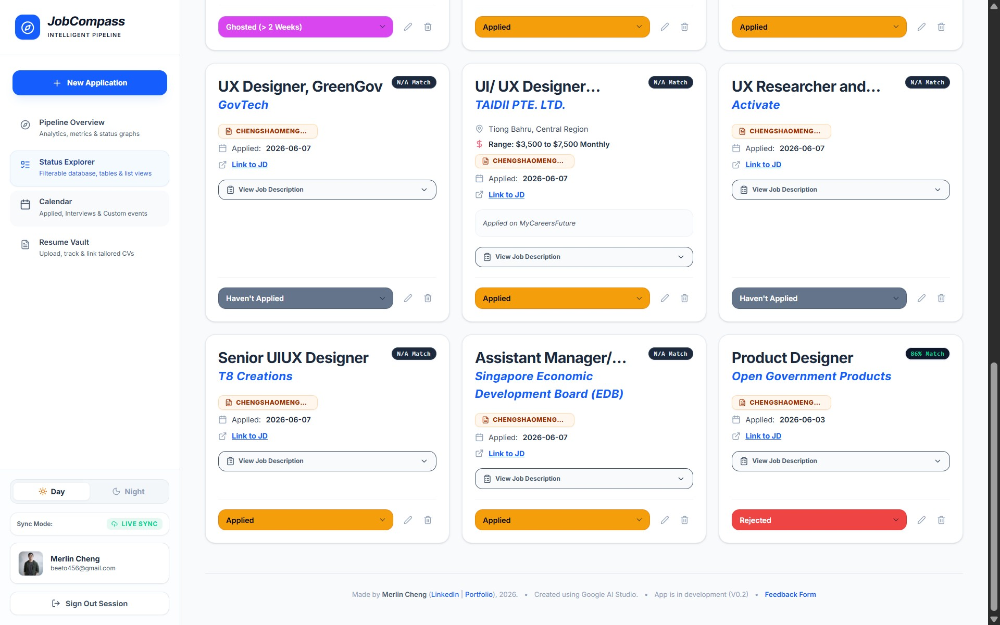
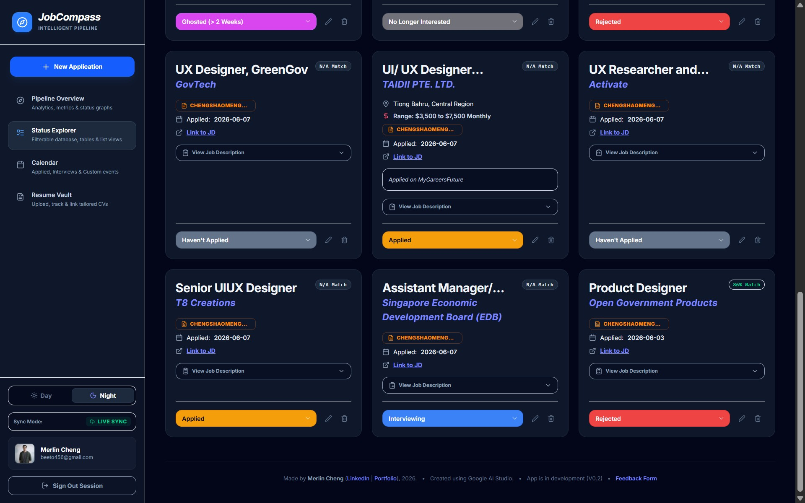

JobCompass: Navigating the Career Pipeline
A focused tracking architecture solving job search fragmentation. Designed specifically for active job seekers tailoring multiple resumes, storing complex descriptions, and managing time-sensitive interview milestones.
Part 1: Positioning Statement
"For active job seekers who are applying to multiple roles and tailoring their resumes for different job descriptions..."
JobCompass is a job application tracking and resume management app that helps users clearly track their application pipeline, monitor progress, and organise job-specific resumes in one place.
"Unlike manual spreadsheets, notes apps, or scattered folders, JobCompass combines application status tracking, visual pipeline analytics, and resume-job linking into a single focused workflow designed specifically for job search management."
Core Differentiators
- Active Document Vault Integrations
- Automatic Calendar Milestone Syncing
- Context-Match Index Analytics
Part 2: Customer Experience (CX) Metrics Framework
| Stage | Product Value Translation | Success Metric | Success Threshold | Window | Live Experiment Plan |
|---|---|---|---|---|---|
| 1. Acquisition | Job seekers choose JobCompass over traditional note platforms. | Signup / intent-to-use rate | > 40–50% signups/clicks | First session / load | Test variant headings (e.g. "Command Centre" vs "Organizer"). |
| 2. Onboarding | User successfully logs their first fully scoped application record. | Application completion rate | > 70% logged target | Within 24 hours | Test setup runs, field indicators, and empty state guides. |
| 3. Engagement | Users active in pipeline, altering stages & uploading documents. | Update frequency / linking rate | > 60% update, > 40% link | 7-Day baseline | Test action shortcuts, notifications, and linkage reminders. |
| 4. Outcomes | Users self-report clearer pipeline organization and control. | Self-reported clarity score | > 70% clear rating | 2-4 Weeks / 5+ logs | Test visual progress charts, interview prep, and comparisons. |
| 5. Retention | Users return continually through the duration of their active search. | 7, 14, 30-day retention | > 50% returned (7D) | Ongoing (30 Days+) | Test weekly wrap-ups and "stale logs needing actions." |
Part 3: User Journey Map
Part 4: Demand / Value Hypothesis
Job seekers need to keep track of multiple job applications, including job titles, companies, application dates, job descriptions, statuses, and outcomes, so that they can manage their job search more confidently and avoid losing track of opportunities.
They currently use spreadsheets, notes apps, browser bookmark lists, clogged email search queues, or simple unassisted memory. These methods are flexible but disjointed, making it difficult to gauge pipeline health or see which resume variation went where.
"If we supply job seekers with a dedicated tracking ecosystem combining pipeline data visualizations, structural status tracking, job description storage, and contextual document linking, they will maintain logs more consistently and feel much more in control."
Part 5: Designing a Testable Solution for the Value/Demand Hypothesis
Epic User Stories
"As an active job seeker, I want to log, organise, and review my job applications in one dashboard so that I can manage my job search pipeline more clearly and make better follow-up decisions."
"As an active job seeker, I want to view a visual overview of my job application pipeline so that I can quickly understand the current state of my job search."
Dashboard return loop validation and core metrics overview click frequency.
User completes form entries and opens the pipeline metrics layout to confirm tracking changes.
"As an active job seeker, I want to update the status of each job application so that I can monitor progress from application to interview, offer, rejection, or no longer interested."
Stage adjustment velocity across the 8 standard pipeline statuses.
User shifts logged opportunities past initial entry state toward advanced selection parameters.
"As an active job seeker, I want to upload and organise tailored resumes so that I can keep track of which resume version I used for each application."
Total resume file uploads compiled in authenticated accounts.
User successfully uploads PDF or DOCX variants with sizes beneath 1MB boundaries.
"As an active job seeker, I want to link a specific resume to a specific job application so that I can review and improve my application strategy over time."
Relative density ratio of mapped files divided by total logged items.
Active records are explicitly mapped directly to customized PDF resumes in the Vault portfolio.
Epic 1 - Detail
Selected Epic User Story:
"As an active job seeker, I want to log, organise, and review my job applications in one dashboard so that I can manage my job search pipeline more clearly and make better follow-up decisions."
Dependent Variable / Goal for Epic 1
The most important question for this epic is whether users are actually using JobCompass to manage their job search pipeline instead of relying on fragmented tools such as spreadsheets, notes, folders, and email inboxes.
The key dependent variable is: Successful job application tracking behaviour.
This can be observed through the following behaviours:- Users create job application entries.
- Users update application statuses after creating entries.
- Users view the pipeline overview after adding applications.
- Users upload resumes into the resume vault.
- Users link resumes to specific job applications.
- Users return to the app after initial use to continue managing their applications.
- The core success metric is whether users create and maintain a meaningful job application pipeline over time, rather than only using the app once.
Child Stories & Analytics for Epic 1
| Child Stories | Analytical Question(s) | Analytics |
|---|---|---|
| As an active job seeker, I want to add a new job application so that I can keep track of the role, company, job description, application date, and current status. |
Do users understand how to start tracking a new application? How often do users complete the “New Application” flow after starting it? |
Event:
new_application_clickedEvent:
application_createdMetric: New application completion rate = applications created / new application clicks
Metric: Average time to complete new application form
Metric: Form abandonment rate
|
| As an active job seeker, I want to store the job description for each application so that I can refer back to the role requirements later when tailoring resumes or preparing for interviews. |
Do users add job descriptions when creating or editing an application? Does storing a job description make users more likely to return to that application later? |
Event:
job_description_addedEvent:
job_description_viewedMetric: Percentage of applications with job descriptions
Metric: Number of job description views per application
Metric: Return rate to applications with job descriptions vs. without job descriptions
|
| As an active job seeker, I want to update the status of my applications so that I can see whether each role is applied, awaiting interview, interviewing, offered, rejected, ghosted, or no longer interested. | Do users regularly update application statuses? Which statuses are most frequently selected? Are users using the status system to maintain an accurate pipeline? |
Event:
status_updatedEvent param:
previous_statusEvent param:
new_statusMetric: Status update frequency per user
Metric: Percentage of applications with at least one status update
Metric: Distribution of applications by status
|
| As an active job seeker, I want to view my pipeline overview so that I can quickly understand how many applications are active, rejected, interviewing, or offered. |
Do users use the pipeline overview after adding applications? Does the dashboard help users understand their job search progress? |
Event:
pipeline_overview_viewedMetric: Dashboard views per session
Metric: Dashboard views after application creation
Metric: Percentage of users who return to the dashboard after updating a status (Note: Might be hard to track as the Pipeline Overview is the default homepage)
|
| As an active job seeker, I want to search and filter my tracked applications so that I can quickly find a specific job, company, or application status. |
Do users need search and filtering once they have multiple applications? Which filters are most useful? |
Event:
application_search_usedEvent:
status_filter_appliedEvent:
sort_option_changedMetric: Search usage rate
Metric: Filter usage rate
Metric: Most commonly used filter type
Metric: Search-to-application-open conversion rate
|
| As an active job seeker, I want to upload tailored resume versions so that I can organise different CVs for different types of jobs. |
Do users use the resume vault to store their tailored resumes? How many resume versions do they upload? |
Event:
resume_upload_startedEvent:
resume_uploadedEvent:
resume_downloadedMetric: Resume upload completion rate
Metric: Number of resumes uploaded per user
Metric: Resume downloads per user
|
| As an active job seeker, I want to link a resume to a job application so that I know which resume version I submitted for each role. |
Do users understand and use the resume-job linking feature? Does linking resumes increase the usefulness of the application tracker? |
Event:
resume_linked_to_applicationEvent:
linked_resume_viewedMetric: Percentage of applications linked to resumes
Metric: Resume linking rate after resume upload
Metric: Number of linked resumes per user
|
| As an active job seeker, I want to revisit previously logged applications to better prepare for follow-ups, interviews, and future applications. |
Do users return to existing application entries after creating them? Which information do they revisit most often? |
Event:
application_card_openedEvent:
application_editedEvent:
job_description_viewedEvent:
linked_resume_viewedMetric: Repeat visits to application entries
Metric: Application edit frequency
Metric: Most viewed application detail sections
|
| As an active job seeker, I want to see recent tracking entries so that I can quickly resume where I left off in my job search. | Does the recent entries section help users re-engage with their latest applications? |
Event:
recent_entry_clickedMetric: Click-through rate from recent entries
Metric: Percentage of sessions where recent entries are used
Metric: Time from dashboard load to recent entry click
|
Analytical Questions & Metrics Summary
The main analytical question is: Does JobCompass help active job seekers maintain a clearer and more consistent job application tracking process?
This can be answered through the following metrics:
- Application creation rate
- New application form completion rate
- Status update frequency
- Percentage of applications with updated statuses
- Dashboard return rate
- Resume upload rate
- Percentage of applications linked to resumes
- Search and filter usage rate
- Repeat visits to existing application entries
- User retention across multiple sessions (sessions/days used)
A successful early version of JobCompass should show that users are not only creating application entries, but also returning to update statuses, reviewing their pipeline, and linking relevant resumes to specific job applications. These behaviours would suggest that the app is becoming part of their ongoing job search workflow rather than functioning as a one-time logging tool.
Part 6: Information Architecture Directory
Explore the complete interaction structure of JobCompass below. Click folders and modules to explore the exhaustive relational database, input properties, and routing logic compiled directly from the system specification.
Introduces structural positioning values, login flows, and security details.
- JobCompass SVG Logo brand element placement
- Authentication panel (Google Login vs Local Sandbox Guest Fallback)
- Interactive Privacy Notice explaining Cloud database storage vs local caches
- System version flags (v0.2 Early Production Release metadata)
Firestore database linkage. Full document sync capabilities, unlimited tailored resumes, cross-device persistence.
Local cache fallback storage only. Data limits apply, resume vault restricted to mock testing assets.
- Primary navigation nodes mapping: Pipeline Overview, Status Explorer, Calendar, Resume Vault
- Day / Night visual rendering toggle controls
- Sync Status Indicator panel:
LIVE SYNCvsLOCAL SANDBOX - Active user credentials panel (Google profile photo, email address, logout buttons)
- Job Title & Company Name *
- Work Arrangement (Remote, Hybrid, Onsite)
- Office location coordinates
- Date Applied/Planned
- Context description text pasting (drives context keywords match engine)
- Interest Rating & Competence Evaluation sliders
- Target Salary details (Min/Max inputs)
- Total Tracked Opportunities (active counter)
- Active Applications (sent and pending)
- Interviews Pipeline (active rounds scheduler)
- Job Offers (successful targets achieved)
Aggregates active database status indicators to render visual breakdown graphs across the 8 standard stages:
- Job Title & Company Name
- Current Status & Location
- Tailored Resume Linked status indicator
- Calculated JD match percentage badge
- Filtering criteria based on the 8 core lifecycle statuses
- Sort options: Date logged (newest/oldest), Job Title (A-Z/Z-A), Company Name (A-Z/Z-A)
- Month Grid overview + Chronological agenda timeline feed
- Auto-generated events: Application submission dates, interview rounds, assessment deadlines, follow-up reminders, offer deadlines, preparation tasks
- Specific event category icon and type name
- Linked job posting URL & Associated resume file links
- Private preparation notes and action-item check boxes
- File Drag-and-Drop sandbox area
- Permitted formats:
.PDFand.DOCX - Size cap parameters: Max 1MB payload limits validation
- Interactive "Google Login Required" popovers in guest sandbox
- Sort parameters: Date Uploaded (newest/oldest), Original File Name (A-Z/Z-A), Resume Name (A-Z/Z-A), Tag Name (A-Z/Z-A), Linked Opportunity Count (highest/lowest)
Appendix: High-Fidelity App Previews
High-fidelity visual representations of the JobCompass production design system showing responsive UI layers optimized for both Light Mode and Dark Mode workflows.
Pipeline Overview Dashboard View
Displays core telemetry cards (Tracked Opportunities, Pending Applications, Active Interviews, and Offers) alongside a detailed metrics distribution bar.


Status Explorer Database Grid
Features rich visual application logs configured with metadata overlays, matching index ratings, and dynamic lifecycle stage selectors.

